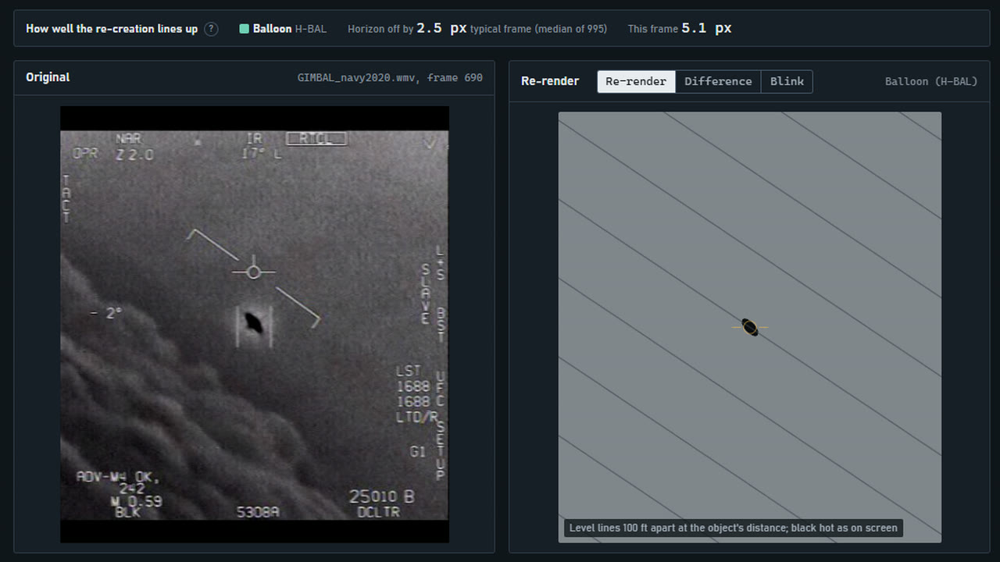

GIMBAL January 2015
A balloon-like drifter leads by small margins; drop two data-quality rules and the free-path object leads instead, so both rankings are shown everywhere. At the documented 0.35° field of view, every leading physical explanation puts the object 15 nmi or more away by the end, while the aircrew report 6 to 8.
Would settle itA radar range good to about 2 nmi.